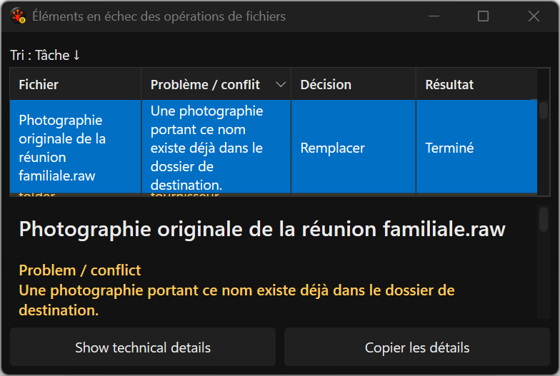
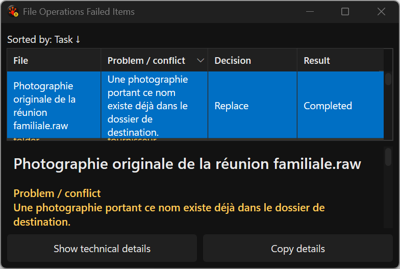
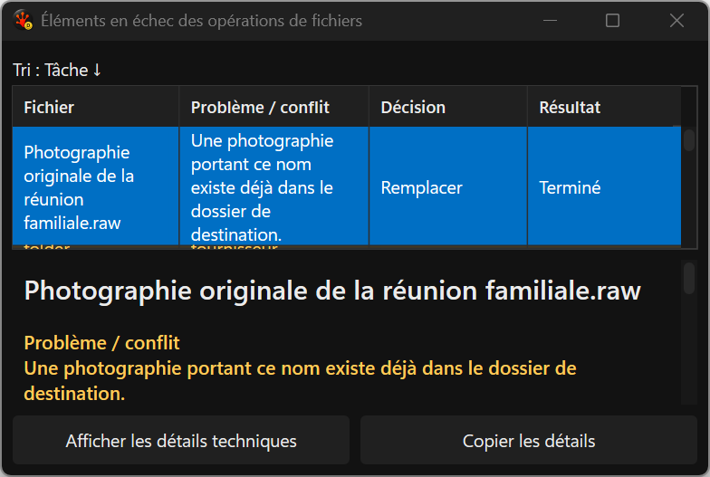
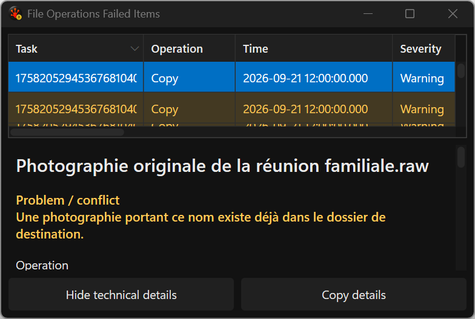
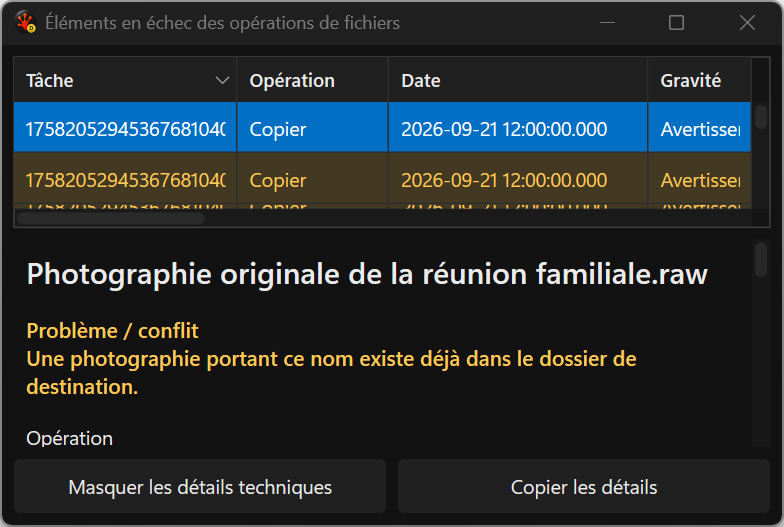

Issues pane — live language changes
Actual application captures · September 21, 2026
The same Issues window, in the active language
The title, headings and actions now change together. Selection, sort and column preferences stay in place. The original French diagnostic message remains recorded data, even when the interface is English.
All five PNGs were produced by the deterministic application test harness. These are unmodified window captures, not desktop screenshots or proposal mockups. Click any image to inspect its original pixels.
Before: switch the existing window to English
The native title, table headings and actions retain French while detail labels change to English.

After: English primary view
Presentation labels follow English together. The selected filename remains prominent; the original problem sentence is preserved.

After: return to French
The same retained window returns to French without replacing the grid or resetting its selected issue.

After: English technical view
The explicit technical view retains its saved column order, widths and sort. Long technical cells still use the existing grid behavior; complete selected detail is independently scrollable.

After: French technical view
Technical headings and action captions also follow the live language change.
